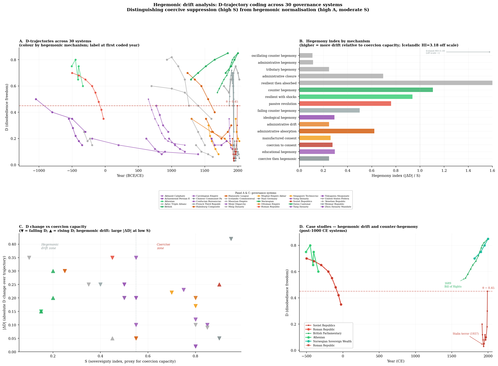

Computational governance research
A question provoked by a book about the deep history of human societies, explored through a governance dataset covering 401 systems from deep prehistory to the present.
The question
In 2021, the anthropologist David Graeber and archaeologist David Wengrow published The Dawn of Everything: A New History of Humanity. It was widely read and debated. The argument was straightforward and contentious: for most of human history, people regularly and deliberately chose between radically different ways of organising themselves. Societies were not locked into fixed evolutionary stages. They experimented, argued, and walked away from hierarchies that did not suit them.
Freedom and political self-determination, Graeber and Wengrow argued, were not modern inventions. They were ancient human capacities that many of our ancestors exercised quite consciously. Çatalhöyük, a 9,000-year-old settlement in Anatolia, shows no evidence of rulers or hierarchy. The Icelandic Commonwealth ran itself for three centuries without a king or state. The Haudenosaunee (Iroquois) Confederacy is often cited in discussions of collective governance and its possible influence on Enlightenment and constitutional thought.
“The ultimate, hidden truth of the world is that it is something we make, and could just as easily make differently.”
Graeber & Wengrow, The Dawn of Everything (2021)The book's historical claims have been widely debated, but its central question is empirically fertile. It raises an immediate empirical question: if societies really did have this capacity for self-determination, can we measure whether they used it? Can we compare Athens in 450 BCE with the Tang Dynasty in 700 CE, or the Tokugawa Shogunate with modern Norway, and say something rigorous about how free people were to push back against power?
Graeber and Wengrow worked primarily with qualitative historical and archaeological evidence. The isonomia project asks what happens if you take their core ideas seriously and try to turn them into numbers.
Isonomia (ισονομια) is an ancient Greek term meaning equality before the law: the equal right of citizens to participate in governance and hold power accountable. The Athenians used it to describe the conditions that made democracy possible. It is older than the word demokratia itself, and captures something more fundamental than voting rights. It describes the practical freedom to refuse, resist, and replace those who govern you.
The framework
The first challenge was conceptual: what exactly do you measure? Political freedom is not a single thing. A society can have free elections but a secret police. It can permit public debate whilst making it physically impossible to leave. The Roman Republic held elections for centuries whilst progressively stripping those elections of any genuine power.
The isonomia framework decomposes political freedom into six dimensions, each coded on a scale from 0 to 1.
Sovereignty index. How much concentrated coercive power does the ruling apparatus hold? High S means hard to resist.
Administrative capacity. How deeply does the state penetrate daily life through census, taxation, education, and surveillance?
Political competition. How genuinely contested is access to power? Can outsiders realistically challenge incumbents?
Exit freedom. Can people leave or withdraw from the system without catastrophic cost?
Disobedience freedom. Can people refuse compliance, protest, or organise opposition without immediate severe punishment?
Replacement freedom. Can the governed actually remove and replace their rulers through legitimate means?
Of these six, D (disobedience freedom) is the central dimension for this project. It is the closest analogue to Graeber and Wengrow’s concept of societies that retained the practical capacity to say no.
Graeber and Wengrow were primarily interested in showing that alternatives existed and that early societies were not trapped in a linear evolutionary progression. The isonomia project takes their insight in three directions.
First, it asks not just whether societies had political freedom, but how much, and whether that quantity can be tracked across time. Second, it asks what happens when freedom is lost: what triggers the suppression of D, and can it be reversed? Third, it tests these questions against 2,600 years of evidence from 401 governance systems across every inhabited continent, cross-validated against six independent modern political-science datasets.
The framework does not assume that freedom follows a single historical arc. It assumes precisely the opposite: that political freedom is unstable, contested, and can be won or lost at any point in history, exactly as Graeber and Wengrow argued.
Interactive explorer
Plot any governance system’s sovereignty (S) against its disobedience freedom (D) and a pattern appears. Most systems do not scatter randomly. They cluster in ways that reflect a basic tension in governance: the more coercive power a ruling apparatus concentrates, the harder it tends to be for citizens to say no.
Every point below is a real governance system from the dataset. Hover or tap for its name and values. Use the filters to highlight by world region or to see specifically the systems Graeber and Wengrow discuss in The Dawn of Everything.
A note on reliability: Codings vary in quality from well-documented modern states to speculative prehistoric cases. The main statistical findings use only the better-documented subset. Full detail in the reliability section.
Dashed line at D = 0.45 marks the critical lock-in threshold identified in Paper 2. Points represent all 401 governance systems in the dataset.
The dashed line at D = 0.45 is not arbitrary. Statistical analysis of the full dataset identifies it as a critical transition: once a system’s disobedience freedom falls below this threshold, the probability of recovery drops sharply. Systems starting above the line have a 6.46× higher odds ratio for avoiding full lock-in (Paper 2). Below it, the structural conditions for organised resistance are substantially harder to maintain.
Interactive explorer
The full dataset codes 401 systems as cross-sectional cases. A smaller trajectory subset of 30 systems has enough temporal evidence to code D at multiple time points, ranging from four to fourteen observations per system. For these 30 systems, it is possible to track D not just as a snapshot but as a series of measurements across centuries. The result is a set of trajectories that show very different stories about how political freedom is won, lost, and occasionally recovered.
Select any system below to see its trajectory. The dashed line marks the critical threshold at D = 0.45.
Disobedience freedom (D) over time for the selected governance system
The trajectories show patterns that are impossible to see in a single-point measurement. The Roman Republic’s 473-year gradual decline from D = 0.70 to 0.35. The Soviet Union’s plunge to near zero under Stalin, partial recovery, and then rapid expansion during glasnost. The British Parliamentary System’s slow but consistent rise from 0.55 at the Glorious Revolution to 0.85 by the late twentieth century.
The full research figure, showing all 30 trajectories simultaneously, is below.

The mechanism
One of the more consistent findings is that the suppression of political freedom is not random. It follows a reproducible sequence that appears across systems separated by thousands of years and tens of thousands of kilometres.
Reading left to right: surplus resources (L) fund institutionalisation (I: the construction of durable offices, rules, records, and enforcement routines), which in turn expands administrative capacity (A). Once that apparatus is sufficiently developed, it begins to constrain the freedom to leave (E). As exit becomes harder, the freedom to disobey (D) follows, and finally the ability to replace rulers (R) is foreclosed.
This sequence maps onto the history of state formation across the ancient world. The Mauryan Empire, the Tang Dynasty, the Roman Republic’s transformation into the Principate, the Ottoman Empire under the Hamidian autocracy: all follow recognisable variants of this pattern.
The lock-in sequence is documented in Paper 2 (draft complete), which applies logistic regression and survival analysis to the full 401-system dataset. The sequence is derived empirically from transition probabilities between states, not imposed as a theoretical prior. The D⊂0; odds ratio (6.46) is from a logistic regression with D⊂0; as predictor and lock-in status as outcome. The 5.03× exit rate is from a Cox proportional hazards model. Both are reported with 95% confidence intervals in the paper.
S = sovereignty index (0–1): concentrated coercive power of the ruling apparatus.
A = administrative capacity (0–1): depth of state penetration through records, taxes, education, surveillance.
D = disobedience freedom (0–1): practical freedom to refuse compliance or organise opposition without severe sanction.
D₀ = the initial level of D at the start of a trajectory or lock-in process. A high D₀ gives citizens more structural room to resist before the window closes.
θ = the empirically estimated critical threshold, here D = 0.45. Systems that fall below this level show sharply lower probabilities of recovery. It is a statistical regularity in the data, not a theoretical assumption.
L = surplus resource legibility (surpluses that are identifiable and extractable by the state). I = institutionalisation. E = exit freedom. R = replacement freedom.
Not all systems lock in equally. The key variable is the initial level of disobedience freedom, D₀, at the point when the lock-in process begins. Systems starting above the θ = 0.45 threshold show a 5× higher exit rate from the lock-in pathway. They have more room to organise, protest, and resist before the window closes.
This matters practically. Political freedom is not just an outcome but a structural resource. Societies that begin with high D₀ are substantially harder to lock in. This is consistent with why authoritarian consolidations so often target civil society, press freedom, and the right to organise first: not because these things are immediately threatening, but because they represent the structural D₀ that makes resistance possible later.
Societies that begin with high disobedience freedom are substantially harder to lock in. High D₀ is the structural resource that makes later resistance possible.
A related finding from a separate model (a continuous-time Markov chain applied to succession mechanisms, Paper 3) shows what happens to leadership replacement as lock-in progresses. As administrative capacity rises and political competition falls, governance systems converge on an appointment attractor: a stable state in which power is transferred by the incumbent to a chosen successor. The equilibrium probability of this state reaches π = 0.595 in high-surplus systems.
This appears in Bronze Age palaces, mediaeval courts, twentieth-century single-party states, and contemporary hybrid regimes. The mechanism is structural, not cultural.
How suppression works
A further question: when D falls, how does it fall? Blunt coercion, through secret police, imprisonment, and physical violence, is one answer, but it is not the most durable one. The most enduring suppression of political freedom does not need continuous force. It works by making the idea of resistance culturally unavailable.
This is what the Italian theorist Antonio Gramsci called hegemony: the ruling class does not merely compel compliance, it manufactures consent. Subjects internalise the worldview of those who govern them so thoroughly that alternatives become literally inconceivable. Michel Foucault described a related mechanism in his analysis of disciplinary societies: when populations are organised under sufficiently comprehensive surveillance, they police themselves.
Paper 5 tested these ideas across 30 governance systems and found four empirically distinguishable mechanisms by which D declines or recovers.
D declines as educational institutions, legal systems, and cultural norms normalise compliance. The Abbasid Caliphate is the clearest case: freedom continued to erode for three centuries after the coercive capacity that established suppression had collapsed. The hegemonic apparatus had become self-reproducing.
D is kept low through the direct application of state force. These systems typically begin with low D₀ and stay there. Remove the coercive apparatus and suppression may lift, but it is expensive and fragile to maintain.
D rises through the deliberate construction of civic institutions (trade unions, free press, independent courts) that embed a culture of dissent across generations. All three rising-D systems in the dataset (Britain, Switzerland, Norway) have sovereignty indices at or below S = 0.20: the state must be weak enough not to crush these institutions whilst they are forming.
Both administrative capacity and disobedience freedom decline together under imperial overextension. The Ottoman Empire in its final century is the case study: as Tanzimat administrative modernisation failed and provincial control collapsed, the Hamidian autocracy intensified coercion to compensate.
One case is worth noting separately. The Tokugawa Shogunate in Japan (1603–1868) sits in the stable-low zone of the phase space: D remained suppressed throughout with minimal change, yet not through active coercive deployment. Instead it was produced by what Foucault would recognise as a panopticon. The mandatory residence system (sankin-kōtai), five-family mutual accountability groups (goningumi), temple registration, and hereditary status categories created a social architecture in which the state’s presence did not need to be felt because it could always, in principle, be felt. The Shogunate inherited a population that had lived through 150 years of civil war and actively wanted order. It began at its equilibrium rather than drifting to it.
New research direction
An exploratory analysis across the 327 geocoded systems in the dataset finds that political freedom is not randomly distributed across the globe. High-latitude societies have significantly higher disobedience freedom than tropical ones (r = +0.316, p < 0.001, n = 327), and 85% of this relationship runs through sovereign capacity: ecological conditions constrain state-building, which sets a higher structural floor on D.
The most surprising result is what does not drive this pattern. If the mechanism were agricultural surplus accumulation, the latitude–D correlation should be strongest for agricultural systems. It is not: for agricultural economies the relationship is flat and non-significant (r = +0.10, p = 0.45, n = 58). It is significant for foraging/fishing (r = +0.39, p = 0.005) and extraction economies (r = +0.45, p = 0.003). The ecology of political freedom runs through ecological constraints on S in non-agricultural societies.
Binding mechanism is an independent predictor: social binding (clan, community, honour) produces mean D = 0.64 versus material binding (land, tribute, debt) at D = 0.31 (Kruskal-Wallis H = 39.7, p < 0.001). This is exploratory work — single-coder codings and acknowledged S–D circularity mean the result should be treated as suggestive. Full analysis: src/ecology_of_freedom.py.
Hover any point for system details. Use filters to isolate economic groups or highlight Graeber & Wengrow systems. Toggle between the scatter and binding mechanism views.
Succession mechanisms
Alongside the six governance dimensions, the dataset tracks how leadership succession mechanisms change over time in 44 systems with sufficient historical documentation. Fifty-seven transition events have been parsed, covering moves between hereditary, appointment, elective, consensus, and rotation succession. These events validate the Paper 3 CTMC model and reveal a striking asymmetry: the path toward appointment and hereditary succession is well-travelled; the path back to consensus is empirically closed.
The cause of a transition is a strong predictor of its direction. External shocks (conquest, colonial imposition) drive toward appointment 60% of the time. Elite reform is the only cause that requires pre-existing disobedience freedom to organise a coalition, and the only pathway that reliably produces freedom-restoring transitions. Collapse, by contrast, resets the system rather than driving it further into lock-in.
Toggle between views. Hover cells or points for detail.
Cell colour intensity = % of transitions of that cause type going in that direction (row-normalised). Hover a cell to see which systems are in it. Fisher exact: external shock vs elite reform on →appointment, p = 0.002.
The transition matrix (centre view) makes the basin structure visible. Hereditary → appointment dominates (n = 13, the darkest cell), consistent with the CTMC appointment attractor. Every column for consensus as a destination is empty except the two self-transitions: no system in the dataset has transitioned from appointment or hereditary back to consensus. The pathway is empirically closed.
The D-by-direction view (right) shows why the bulk statistical test for D moderation of recovery is non-significant: the eight recovery transitions are bimodal. Athens at D = 0.85 and the Dutch Republic at D = 0.60 recovered through elite reform with pre-existing civic D. The Egyptian Old Kingdom and Classic Maya recovered through collapse at D = 0.10–0.35 — a structurally different mechanism. D moderation holds for one type of recovery but not the other.
Recovery mechanisms
Within the eight toward-freedom succession transitions in the dataset, two structurally different recovery mechanisms appear. Elite reform recoveries require pre-existing disobedience freedom as a coalition resource. Collapse recoveries do not: the administrative apparatus dissolves regardless of D values.
The critical finding is that within elite reform recoveries, sovereign capacity (S) at the time of transition is a near-perfect predictor of how far the recovery goes: r(S, D) = −0.984, p = 0.002. Systems with low S at the moment of reform achieve full recovery above the resilience threshold. High S caps the recovery even when a coalition successfully forces change — Magna Carta (S = 0.75) produced a feudal charter, not a democratic restoration.
Collapse recoveries (Egyptian Old Kingdom, Kurultai) show that D⊂0; is not causally required: D rose as a consequence of administrative dissolution, not as a mobilising resource. Both collapse recoveries were partial and unstable.
Toggle between views. Hover any point for detail.
Elite reform transitions only (n = 5). Point size ∝ D⊂0;×(1−S). Green zone = full recovery (D ≥ θ). r = −0.984, p = 0.002.
The composite index D⊂0;×(1−S) perfectly orders the five elite reform cases: Athens (0.72), Dutch Republic (0.42), Greek reforms (0.18), Magna Carta (0.04). This is not a statistical artefact — it reflects the joint condition for full democratic restoration: sufficient civic coalition resource (D⊂0;) combined with temporary sovereign weakness (1−S). When either condition is absent, recovery is partial or impossible. Full analysis in src/recovery_depth.py.
Dynamic validation
The 15 trajectory systems that begin above the resilience threshold (D ≥ θ = 0.45) provide a direct test of the lock-in sequence timing prediction. A Kaplan–Meier survival analysis of time to D-threshold crossing reveals the structural determinants of durability.
The most theoretically important result is that legibility (L) does not predict crossing time (C = 0.543, p = 0.68). High-L systems include both Nazi Germany (L = 0.85, crossing in 2 years) and British Parliament (L = 0.75, 309 years and still above threshold). The same legibility value produces crossing times spanning three orders of magnitude. L is mechanism-contingent: it enables hegemonic capture but is also compatible with indefinite counter-hegemonic survival.
Sovereign capacity (S) is the structural gate: C = 0.940, log-rank p = 0.007. Systems with high S at the point where D is still above threshold show 86% event rate within a median of 70 years. Low-S systems show 25% event rate with median survival not reached in the data (>903 years). Mechanism class is the strongest single predictor: multivariate log-rank p = 0.001. Counter-hegemonic systems show only 12.5% event rate across the full observation window, all but one (the Icelandic Commonwealth, absorbed after 332 years) remaining above the threshold for their full documented history.
Toggle between views. Hover for system detail.
Kaplan–Meier survival curves by mechanism class (| = censored). Counter-hegemonic curve (green) stays near 1.0; hegemonic (red) falls steeply. Multivariate log-rank p = 0.001.
The counter-hegemonic systems (British Parliament, Swiss Canton, Norway, Athens, Iceland) share a structural feature identified in Paper 2: they allowed legibility to rise while institutionally constraining sovereign capacity. The survival analysis confirms this dynamically rather than case-by-case. The same L = 0.75 that makes Nazi Germany maximally vulnerable produces the British Parliamentary System’s 309-year survival precisely because S remained at 0.20 rather than rising to 0.95. S is not an inevitable consequence of L: it is an institutional choice. Full analysis: src/survival_analysis.py.
Governance archetypes
Three complementary analyses extend the phase-space picture. Dynamic Time Warping clustering of the 30 time-series trajectories reveals three empirically distinct trajectory shapes, validating the Paper 5 mechanism taxonomy from trajectory form alone. Empirical quadrant transition probabilities from 151 consecutive observation pairs confirm the asymmetric attractor structure: P(LI → LI) = 0.989, P(LI → CH) = 0.000. And Gaussian Mixture Model analysis reveals two structurally distinct archetypes in the high-D/low-S region that are invisible in the two-dimensional phase space.
The most theoretically important finding is the Civic-competitive versus Mobile-stateless distinction. Both archetypes achieve high D and low S, but through different structural pathways: institutional voice mechanisms (assemblies, thing-systems, guilds) versus exit and dispersal illegibility (nomadic confederacies, foraging networks, highland communities). Both are outside the lock-in sequence trajectory. This is the Hirschman Exit versus Voice distinction and Scott’s highland-stateless versus civic-republican distinction, confirmed as genuinely distinct classes by independent GMM analysis (MW P: p < 0.001; MW A: p < 0.001).
Toggle between three views. Hover for detail.
30 systems on a normalised time axis [0 = start, 1 = end]. Colour by DTW cluster (k = 3, silhouette = 0.656). Green = rising counter-hegemonic; amber = falling high-D; slate = descending/stable. Hover any line for system name.
The quadrant transition matrix is the most direct empirical confirmation of the lock-in sequence’s central claim: no observed trajectory step moved from the Locked-in quadrant to Counter-hegemonic. The transition is not merely unlikely — it is absent from 151 observed steps across 30 systems. This is consistent with the succession dataset finding (no transition from appointment or hereditary back to consensus in 57 documented events) and the recovery depth analysis (D⊂0; × (1−S) must be sufficient for elite reform to produce full recovery). Together these three analyses from different data sources all point to the same structural conclusion: the lock-in asymmetry is real, observable, and not an artefact of any single analytical choice. Full analysis: src/trajectory_cluster_lca.py.
Administrative capacity and arrangement freedom
The lock-in sequence treats administrative capacity (A) as uniformly suppressive of political freedom. The A-decomposition distinguishes two components: information infrastructure (II), the normalising component (schools, records, communications, and the residual repressive apparatus. Systems where II exceeds A by more than 7% (II/A > 1.07) show rising D alongside rising A. Systems below that threshold show the standard suppression. Cross-sectionally: r(A, D) = −0.558, but r(II/A, D) = +0.232: the ratio reverses the sign.
A separate analysis establishes that arrangement freedom (R), the capacity to reorganise social institutions, predicts D independently of sovereign capacity: partial r(R, D | S) = +0.415, p < 0.001. R and exit freedom (E) co-occur structurally (r = 0.922): both require the absence of irreversible institutional commitment enforced by sovereign power. The 14 Graeber–Wengrow-discussed systems score significantly higher on R, E, D and lower on S than the rest, but not on competitive politics P. Their freedom is structural (exit and reorganisation), not institutional-competitive.
Three views. Hover any point or bar for detail.
II/A (normalising fraction) vs within-system r(ΔA, ΔD). Green zone = correct prediction region. Threshold at II/A = 1.07. r = +0.747 (p = 0.021); excl. Ottoman: +0.921 (p = 0.001). 8/9 correct.
The normalising fraction result answers a question raised by Sections 6 and 8.4: why do some high-L systems avoid lock-in? Partly because they maintained pre-existing D (the counter-case argument), and partly because their rising administrative capacity was predominantly normalising rather than repressive. Norway, Switzerland, and Britain all have II/A > 1.10 in the dataset. The Egyptian Old Kingdom, Qin, and Assyrian Empire are all well below 1.00. Full analysis: src/a_decomposition.py.
Paper 4 — Schismogenesis ABM
The governance citation network has an unusual structural property: EDR correlates positively with mean neighbour EDR at degrees 1 and 2, but reverses sign at degree 4. At four network hops, governance systems reliably resemble their antipode rather than their neighbour. This degree-4 sign reversal is the structural signature of a bipolar network, and the mechanism is schismogenesis: contact between governance systems produces differentiation rather than convergence.
An agent-based model with three parameters (contrast threshold α, contagion strength β, schismogenesis strength γ) and a three-cluster initialisation reproduces the contagion decay pattern at degrees 1–3. The bridge-seeded initialisation reproduces the degree-4 sign reversal: r_d4 = −0.392 (target −0.391). The calibration ceiling shifts to contrast_cross and delta_contrast. This is a finding, not a failure: schismogenesis is a necessary but not sufficient condition for bipolarity. Historically structured awareness sets are what produces the full fine-grained differentiation.
Three views. Hover for detail.
Model vs empirical target at citation distances d = 1–4. Degrees 1–3 reproduced; degree-4 sign reversal (target −0.391) is the calibration ceiling (model: +0.193). Best params: α = 0.30, β = 0.003, γ = 0.012, loss = 0.553.
The three case studies confirm the predicted trajectory types. Celtic Tribal Assemblies (0.70→0.936 ± 0.113): contact with low-EDR Mediterranean systems activates schismogenesis, driving the Celtic agent further toward its own high-EDR pole. Zomia Highland Communities (0.92→0.980): Scott’s thesis that Zomia maintained high illegibility because of lowland state contact is directly reproduced. Iroquois Confederacy (0.77→0.760 ± 0.251): at t = 80 colonial L-imposition activates, coupling the schismogenesis model to the lock-in sequence (Paper 2). Neither mechanism alone predicts the two-phase trajectory; their conjunction does. Full analysis: src/schismogenesis_abm.py.
How reliable is this?
The full exploratory dataset includes 401 systems from Palaeolithic band societies to contemporary states, ranging back to 300,000 BCE in the most speculative cases. The main statistical papers focus on the better-documented historical subset, spanning roughly 2,600 years. The quality of evidence varies enormously across this range, and it is worth being direct about where the codings are well-grounded and where they are speculative.
Each system is assigned a review class (1–3) reflecting the combination of evidence quality and interpretive difficulty. Level 3 does not mean most certain; it means the evidence is richest but the governance interpretation is most contested.
264 systems (66%) are early prehistoric cases with thin or indirect evidence. The core statistical findings in the papers are robust to excluding these systems; all primary analyses use the better-documented subset. Individual ancient codings should be treated with caution.
Separately from the review class, each system has an evidence strength rating (2–5) reflecting the richness of the source material.
72 systems have no evidence strength coding yet. All are flagged in the dataset.
The core metrics are compared against six independent datasets where overlap exists. Modern systems are validated against V-Dem, Polity5, WJP, Freedom House, and CCP. Pre-modern administrative and complexity indicators are compared against Seshat, making it relevant across a wider time range than the modern benchmarks.
| Dataset | Correlation |
|---|---|
| Freedom in the World (FIW) | r = 0.923 |
| WJP Rule of Law Index | r = 0.904 |
| V-Dem (v2x_libdem) | r = 0.84 (n = 15, p < 0.001) |
| Polity5 (polity2) | r = 0.82 (n = 15, p < 0.001) |
| Seshat | r = 0.604–0.774 |
| CCP | r = 0.681 |
V-Dem and Polity5 are system-level reproduced values (n = 15 matched modern systems; see src/validate_external.py). FIW, WJP, Seshat, CCP are aggregate correlations. Validation applies to the modern subset only.
Reproduced correlations from validate_external.py. Hover any point for detail.
The main limitations to hold in mind when reading the findings:
The dataset includes 112 systems starting before the Common Era, of which a portion extend back to the Palaeolithic (pre-10,000 BCE). These codings are necessarily more speculative than the medieval or modern cases. They are based on archaeological evidence for settlement patterns, storage structures, burial differentiation, and monument construction, interpreted using anthropological models of band and chiefdom governance.
The primary statistical findings (lock-in sequence, D₀ odds ratio, hegemonic drift mechanism tests) are all derived from systems with at least moderate confidence ratings and are robust to the exclusion of the Palaeolithic subset. That subset is included in the dataset for completeness and because even speculative comparative data has value, but readers should treat individual ancient codings with appropriate scepticism.
Some of the most historically contested systems in the dataset (the Roman Republic, the Iroquois Confederacy, Çatalhöyük, the Aztec Triple Alliance) are assigned coding confidence level 3, which in this scheme means not “most certain” but “most contentious to code.” These are systems where the documentary or archaeological record is rich but where historians actively disagree about interpretation. The codings represent a defensible reading of the evidence, documented in the notes field of the dataset, but alternative reasonable readings exist and are acknowledged.
The full coding notes are available in governance_extended.csv in the repository.
The research
Each paper addresses a distinct question using the same underlying dataset and framework.
Establishes the governance coding scheme, validates it against six external datasets, and maps 401 governance systems in six-dimensional phase space. The foundational paper for the series.
Journal of World-Systems Research (submitted May 2026)
Documents the L→I→A→E↓→D↓→R↓ sequence and establishes D₀ as the key moderator. Odds ratio of 6.46 for avoiding lock-in in high-D₀ systems, with a 5× higher exit rate.
Target journal: TBC
Applies continuous-time Markov chain modelling to leadership succession mechanisms. Documents the appointment attractor (π = 0.595) and the consensus founding-state finding.
Target journal: TBC
Agent-based model of Bateson’s schismogenesis concept applied to governance networks. Reproduces the degree-4 sign reversal and confirms three Graeber-Wengrow case studies.
Target journal: TBC
Integrates the findings of Papers 1–4 into a unified synthesis, submitted as a standalone contribution to the cliodynamics literature, with six embedded figures.
Cliodynamics (submitted 2026)
Disaggregates D-suppression into four mechanisms. Proposes the sign of r(ΔA,ΔD) as a non-circular mechanism classifier. 30 systems, 2,600 years of trajectory data.
Social Evolution & History (submitted June 2026)
Results
These are the findings that have survived statistical testing most consistently across the papers to date.
Higher odds of avoiding lock-in for systems starting above D = 0.45 (logistic regression, Paper 2).
Hegemonic systems begin with significantly higher D than coercive systems (Mann-Whitney, Paper 5).
Pooled correlation between administrative capacity expansion and D decline across 79 historical intervals in 9 systems (Paper 5).
Equilibrium probability of appointment-based succession in high-surplus systems: the appointment attractor (CTMC, Paper 3).
Sovereignty threshold below which counter-hegemonic D recovery appears possible. All three rising-D systems fall below this (Fisher exact p = 0.030, Paper 5).
Duration for which Abbasid hegemonic suppression of D persisted after the coercive capacity that established it had fully collapsed (Paper 5).
Latitude–D correlation across 327 geocoded systems: higher-latitude societies have significantly more political freedom, mediated 85% through sovereign capacity (exploratory).
The latitude–D relationship is non-significant for agricultural economies (r = +0.10, ns) but significant for foraging/fishing and extraction — contradicting the agricultural surplus pathway.
Systems collapsing from internal revolt have mean D = 0.20 and S = 0.68 — highest S and lowest D of any collapse type. Full lock-in produces brittleness, not stability (MW p = 0.003).
Concordance index of sovereign capacity as predictor of time to D-threshold crossing across 15 trajectory systems. L does not predict crossing (C = 0.543, p = 0.68) — S is the structural gate.
Event rate for counter-hegemonic systems in the survival analysis: only 1 of 8 crossed the resilience threshold. Hegemonic systems: 100% event rate, median 51 years (multivariate log-rank p = 0.001).
No observed trajectory step moved from Locked-in to Counter-hegemonic in 151 empirical step-transitions. P(LI→LI) = 0.989. The lock-in asymmetry is directly observable, not modelled.
Normalising fraction threshold above which rising administrative capacity accompanies rising D rather than suppressing it. r(II/A, r_lag0) = +0.747 (p = 0.021); 8/9 systems correctly classified.
Degree-4 sign reversal reproduced: r_d4 = −0.392 (target −0.391). Bridge-seeded initialisation is the key: bridge nodes (0.35 ≤ EDR ≤ 0.60) connect via contrast to both poles simultaneously.
Partial r(R, D | S): arrangement freedom predicts disobedience freedom beyond sovereign capacity. R and E are structurally coupled (r = 0.922): both require absence of irreversible institutional commitment.
Two genuinely distinct high-freedom archetypes: Civic-competitive (voice, P = 0.65) and Mobile-stateless (exit, E = 0.73). Confirmed by GMM independent of KMeans (MW p < 0.001 for both P and A).
The lock-in sequence has been observed in enough modern governance systems to suggest that the structural mechanisms identified here are not exclusively historical. The D₀ result is particularly relevant: the evidence suggests that the most effective protection against autocratic consolidation is the prior existence of a high-D political culture, with the civic institutions, legal traditions, and cultures of organised dissent that sustain it. Dismantling those institutions, even incrementally, reduces the structural resource available for resistance later.
The hegemonic inertia finding suggests that removing a coercive apparatus may be insufficient to restore freedom in societies where the normalisation of compliance has become deeply embedded. The Abbasid case shows that even after coercive capacity is gone, D may continue falling for centuries because the educational, juridical, and cultural infrastructure of compliance has become self-reproducing.
How it developed
Starting point
The Dawn of Everything proposes that human societies have always had the capacity for radical political self-determination. The isonomia project asks whether this can be formalised and tested.
Foundation
401 governance systems coded across six dimensions. Cross-validated against V-Dem, Polity5, WJP, Freedom in the World, CCP, and Seshat.
Core finding
The L→I→A→E↓→D↓→R↓ sequence documented. D₀ identified as the key moderator. The θ = 0.45 critical threshold established. Appointment attractor modelled via CTMC (Paper 3).
Deepening
Bateson’s schismogenesis applied to governance networks via agent-based modelling. Three Graeber-Wengrow case studies confirmed computationally (Paper 4).
Refinement
Not just whether D falls, but how. Four pathways identified. The Gramsci-Foucault-Bateson synthesis operationalised. The r(ΔA,ΔD) sign classifier proposed (Paper 5).
June 2026
Hegemonic drift analysis across 30 systems submitted to Social Evolution & History.
In progress
A decomposition of administrative capacity into normalising and repressive components confirms the Paper 5 sign classifier is robust. Exploratory analysis finds a latitude–D relationship mediated through sovereign capacity, with a non-Boserup result: the ecology of political freedom runs through non-agricultural constraints on state-building, not agricultural surplus accumulation.
In progress
Kaplan–Meier survival analysis across 15 trajectory systems confirms that mechanism class (log-rank p = 0.001) and S (C = 0.940, p = 0.007) predict time to D-threshold crossing. L does not predict (C = 0.543, p = 0.68). Counter-hegemonic systems survive above the threshold indefinitely by decoupling legibility from sovereign capacity.
In progress
135-combination parameter sweep identifies best-fit α = 0.30, β = 0.003, γ = 0.012. Degrees 1–3 reproduced; degree-4 sign reversal is the calibration ceiling. Three G–W case studies confirmed: Celtic, Zomia, Iroquois.
In progress
The normalising fraction II/A predicts the sign of r(ΔA, ΔD) within trajectory systems (r = +0.747, 8/9 correct). Rising counter-hegemonic systems have mean II/A = 1.233 vs non-rising 1.028 (MW p = 0.014). Partial r(R,D|S) = +0.415; G&W systems distinguished by R, E, D, S but not P.
In progress
DTW trajectory clustering (k = 3, silhouette = 0.656) validates the Paper 5 mechanism taxonomy from shape alone. Empirical quadrant transition probabilities confirm P(LI→CH) = 0.000 across 151 observed steps. GMM confirms two distinct high-freedom archetypes: Civic-competitive (voice) and Mobile-stateless (exit).
In progress
Within toward-freedom succession transitions, elite reform recoveries show r(S, D) = −0.984 (p = 0.002): sovereign capacity at the time of transition sets the ceiling on recovery depth. D⊂0;×(1−S) perfectly orders all five elite reform cases. Collapse recoveries show D⊂0; is not causally required.
Open research
All data, analysis scripts, and coding documentation are publicly available. Every statistical result in the papers can be reproduced from the source data using the provided scripts.
The repository contains:
ecology_of_freedom.csv and ecology_of_freedom.pnglifelines